반갑습니다
저는 이주헌입니다 :D
이런 프로젝트 경험이 있습니다.
-
Palette
AI 기반 키워드별 컬러 추천 및 피킹 서비스
w/ Next.js, Typescript, TailwindCSS, Openai -
-
Galaxy Market
C2C 중고 거래 서비스 플랫폼
w/ Next.js Typescript, SWR, TailwindCSS, Prisma- 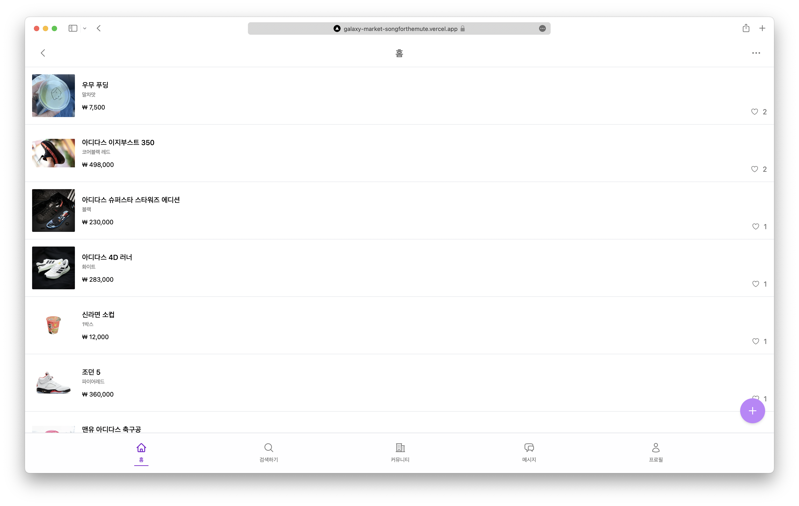
- 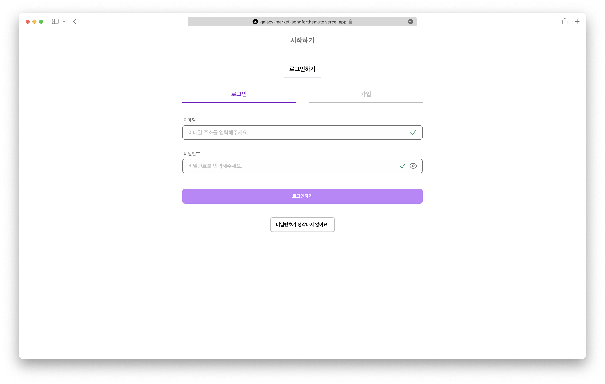
- 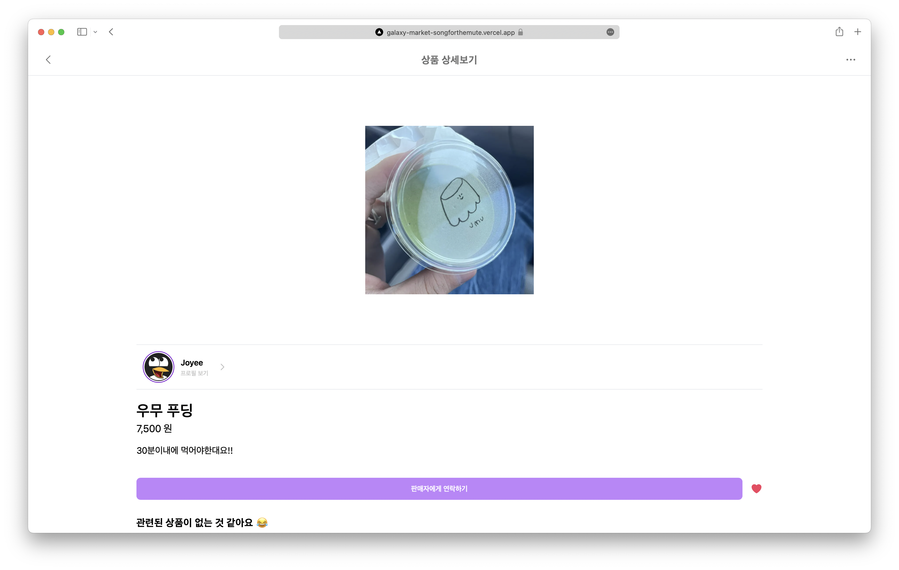
- 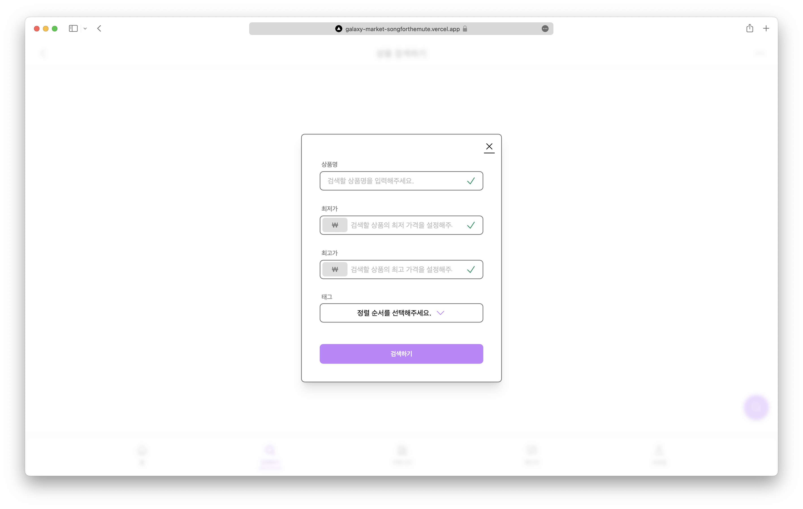
- 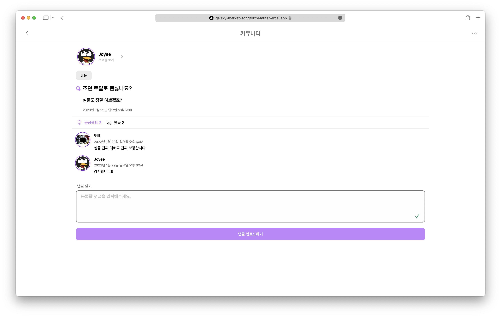
- 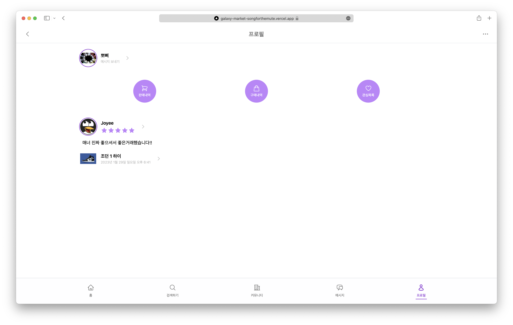
-
At Flix
영화 & TV 시리즈 탐색 서비스
w/ Typescript, React, styled-component, react-query, framer-motion -
-
Rello
스케줄 칸반 보드 서비스
w/ Typescript, React, styled-components, recoil-

-

-

- 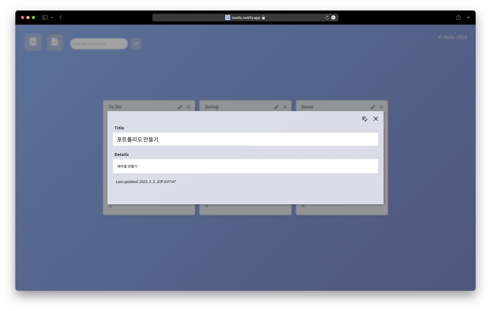
-
-
Coin Track
암호 화폐 트래킹 서비스
w/ Typescript, React, recoil, ApexCharts- 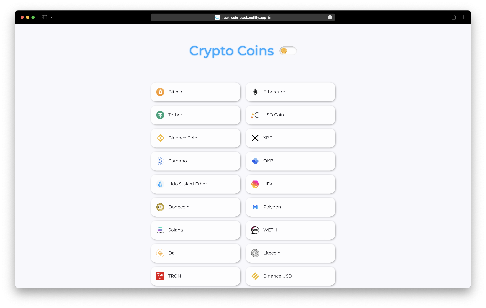
- 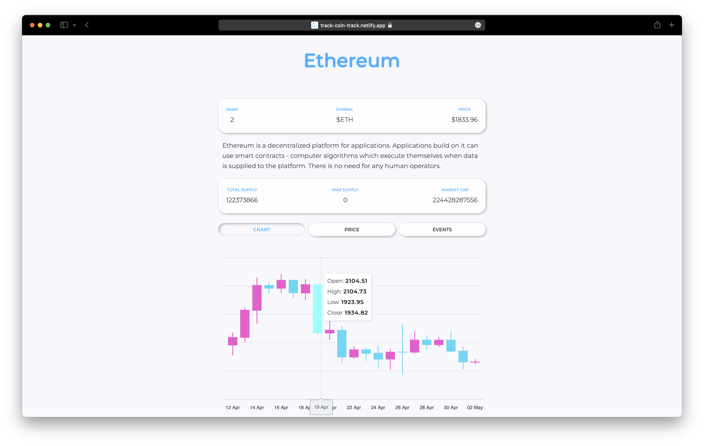
- 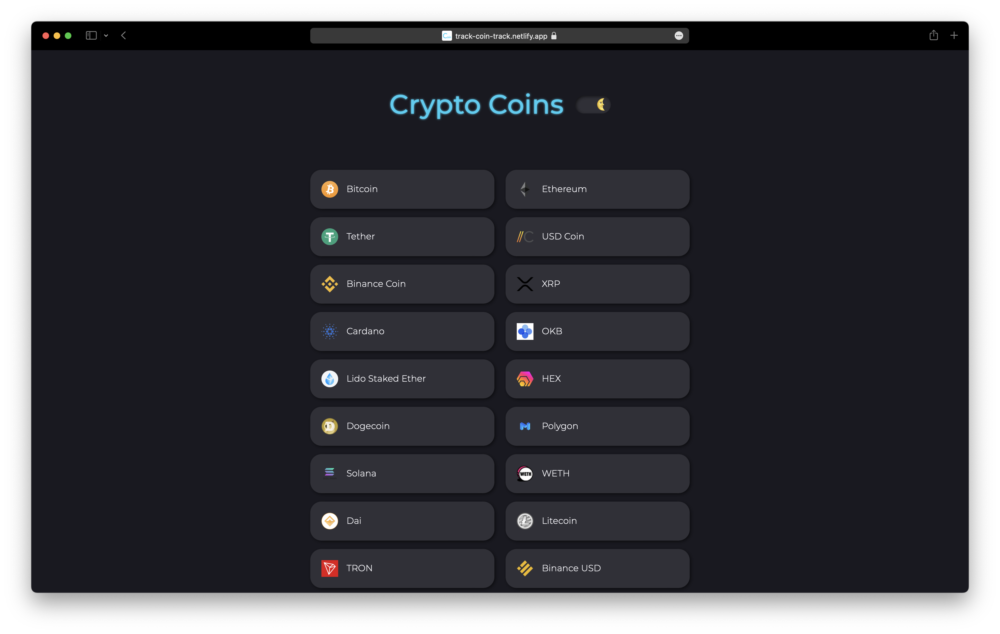
- 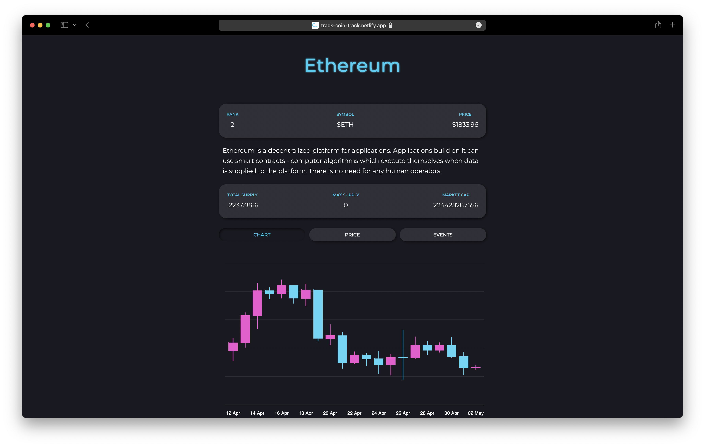
-
Music Tree
음원 & 아티스트 탐색 서비스
w/ Javascript, React- 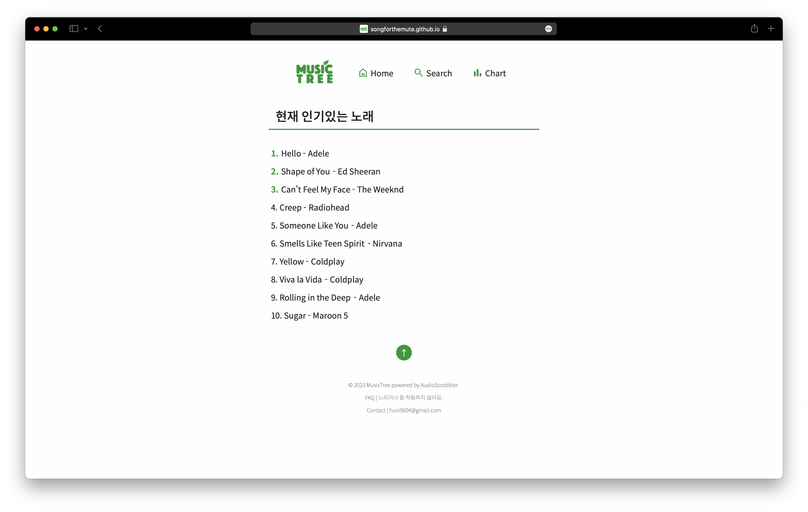
- 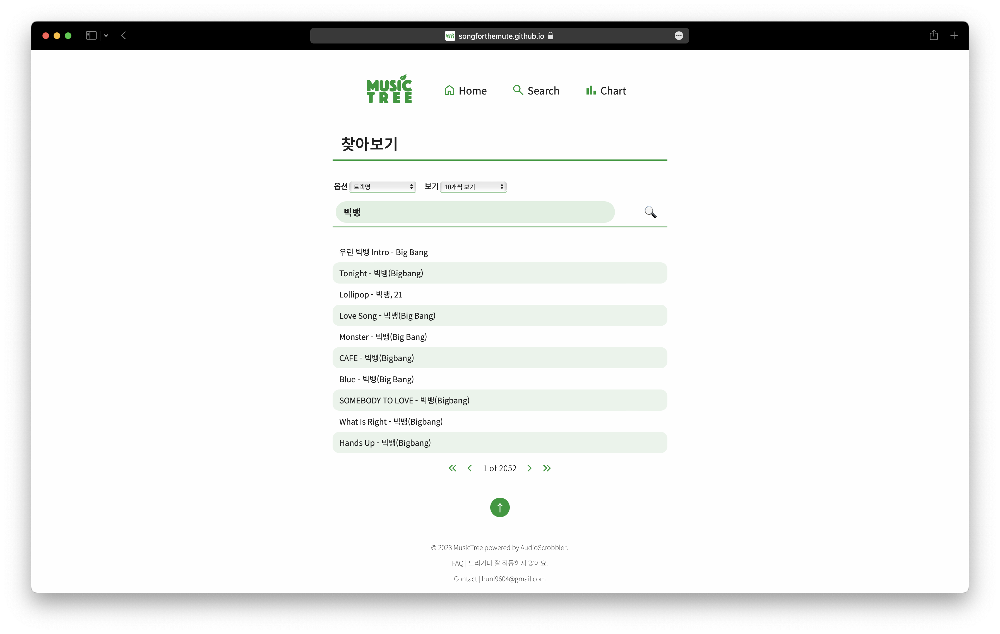
-

- 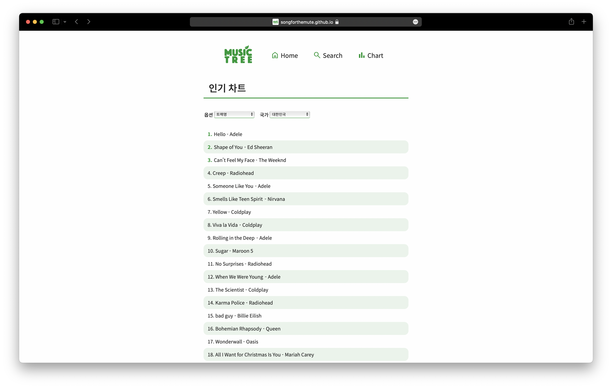


경험으로 배운 것을 기록으로 남기고 있습니다.
이런 기술도 사용할 수 있어요.
- HTML5, CSS3(SCSS), Javascript(ES6+), Typescript
- React, Next.js, Redux, Recoil
- Tailwind, Styled-component
- Node.js(w/ Express.js), Prisma, MongoDB(w/ Mongoose)
- Git, Github
- Adobe Creative suites, MS Offices
- Mac OS, Windows